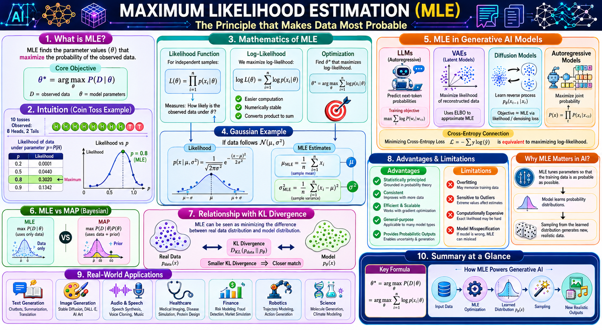

MLE is a method for estimating the parameters θ of a statistical model by maximising the likelihood function — the probability of observing the given data under those parameters. It is the statistical engine behind almost all modern generative AI training.
| Method | Objective | Prior | Use Case |
|---|---|---|---|
| MLE | Max P(D|θ) | No | Generative AI, classic stats |
| MAP | Max P(θ|D) ∝ P(D|θ)P(θ) | Yes | Bayesian regularisation |
| MoM | Match sample moments | No | Simple closed forms |
Data: [2, 4, 6] from N(μ, σ²). MLE for μ = sample mean = 4. MLE for σ² = 1/n Σ (xᵢ−μ)² = 8/3 ≈ 2.667.
Click each step to expand details.
Assume i.i.d observations D = {x₁,…,xₙ} from a parametric family p(x|θ). Example: coin toss (Bernoulli) with unknown p.
L(θ) = ∏ p(xᵢ|θ). For coin with heads count H, L(p) = pᴴ(1-p)ⁿ⁻ᴴ.
ℓ(θ)=∑ log p(xᵢ|θ). For coin: ℓ(p)= H log p + (n−H) log(1−p).
∂ℓ/∂p = H/p − (n−H)/(1−p)=0 → p̂ = H/n. For neural networks, use gradient ascent.
θ̂_MLE maximises data probability. In generative AI, sample from pθ̂(x) to create new realistic outputs.
Adjust θ until the observed data becomes most probable. Below: interactive coin‑toss MLE — drag sliders to see how the likelihood curve peaks at p̂ = Heads/n.
For N(μ,σ²): μ̂ = sample mean, σ̂² = (1/n)∑(xᵢ−μ̂)². Works because log‑likelihood is quadratic.
Minimising KL divergence between data distribution and model distribution is equivalent to MLE.
| MLE | MAP | |
|---|---|---|
| Objective | max P(D|θ) | max P(θ|D) ∝ P(D|θ)P(θ) |
| Prior | None | Required |
| Bias | Asymptotically unbiased | Biased but lower variance |

Top section: definition and objective. Middle left: coin‑toss curve shows maximum at p=Heads/n. Middle right: math of likelihood and log‑likelihood. Bottom: MLE in modern generative models and the summary formulas. Use this as your final revision cheat sheet.